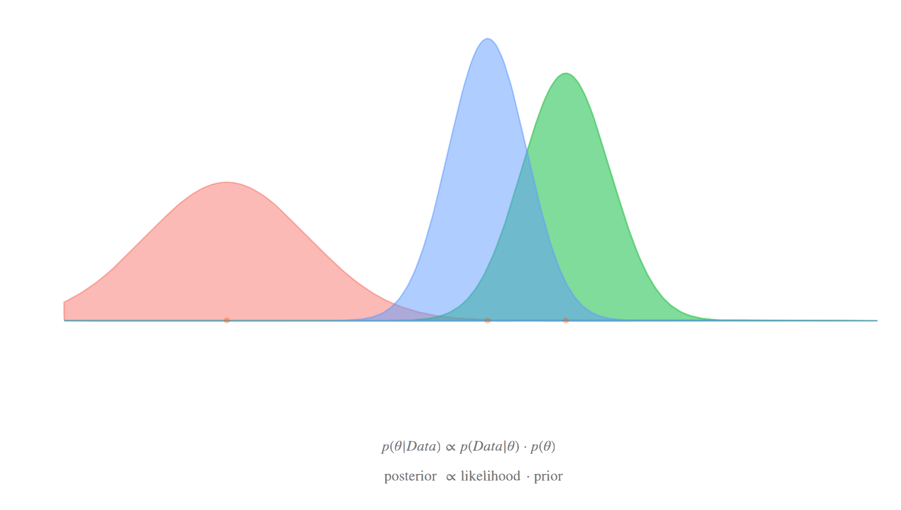
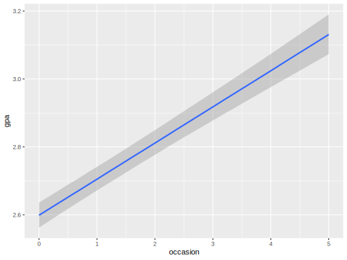
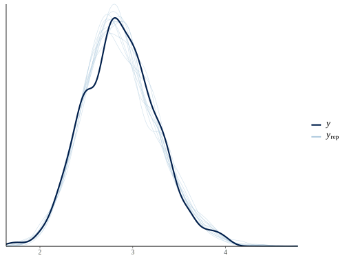

Bayesian Approaches

With mixed models we’ve been thinking of coefficients as coming from a distribution (normal). While we have what we are calling ‘fixed’ effects, the distinguishing feature of the mixed model is the addition of this random component. Now consider a standard regression model, i.e. no clustering. You can actually do the same thing, i.e. assume the coefficients are not fixed, but random. In this sense, the goal is to understand that distribution, and focus on it, rather than just the summary of it, e.g. the mean. However, the mean (or other central tendency) of that distribution can be treated like you’ve been doing the fixed effects in your standard models.
Thus you can use how you’ve been thinking about the random effects in mixed models as a natural segue to the Bayesian approach, where all parameters are random draws from a distribution. Using Bayesian versions of your favorite models takes no more syntactical effort than your standard models. The following is a standard linear regression and a mixed model in the brms package, but would likewise be the same for rstanarm.
brms::brm(gpa ~ occasion, data = gpa)
brms::brm(Reaction ~ Days + (1 + Days | Subject), data = sleepstudy)
rstanarm::stan_lm(gpa ~ occasion, data = gpa)
rstanarm::stan_lmer(Reaction ~ Days + (1 + Days | Subject), data = sleepstudy)So running the Bayesian models is not only as easy, the syntax is identical! Furthermore, just like mixed models allowed you to understand your data more deeply, the Bayesian models have the potential to do the same. Even the probabilities and intervals make more sense. With rstanarm and especially brms, you can do fairly complex models, taking you further than the standard mixed model packages, all without learning how to code the models explicitly in Stan, the probabilistic programming language that both are based on. However, when you get to that point, the modeling possibilities are only limited by your imagination.
You will have to learn a new inferential framework, as well as some of the nuances of the Markov Chain Monte Carlo (MCMC) approach. But you may be surprised to find that the basics come more easily than you would anticipate. Using tools like brms and related make it easier than ever to dive into Bayesian data analysis, and you’ve already been in a similar mindset with mixed models, so try it out some time. I have an introduction to Baysian analysis with Stan, and a bit more on the Bayesian approach and mixed models in this document.
Priors
The following information about priors assumes some background knowledge of Bayesian analysis, particularly for regression models. The Stan development group offers recommendations here, so refer to it often. Note that Stan does not require conjugacy, in contrast to tools such as BUGS/JAGS. This frees one up to use other prior distributions as they see fit. Generally though, using some normal distribution for the fixed effects, and the package defaults for variance components, should suffice for the standard models we’ve been discussing.
Fixed effects
For fixed effect regression coefficients, normal and student t would be the most common prior distributions, but the default brms (and rstanarm) implementation does not specify any, and so defaults to a uniform/improper prior, which is a poor choice. You will want to set this for your models. Note that scaling numeric predictors benefits here just like it does with lme4, and makes specifying the prior easier as well.
Variance components
In Bayesian linear mixed models, the random effects are estimated parameters, just like the fixed effects (and thus are not BLUPs). The benefit to this is that getting interval estimates for them, or predictions using them, is as easy as anything else. Typically priors for variance components are half-t for the variances, as the values can only be positive, but beyond that, e.g. intercept and slope correlations, you can again just rely on the package defaults.
To make this more explicit, let’s say we have a situation with random intercepts and slopes, with variances 1 and .1 respectively, with a .3 correlation. The random effects, say for 10 clusters, would come from a multivariate distribution as follows.
[,1] [,2]
[1,] 1.0 0.3
[2,] 0.3 0.1 [,1] [,2]
[1,] -1.1527954 -0.3505383
[2,] 0.2528275 0.0917429
[3,] 0.5419091 0.1836472
[4,] -1.4590092 -0.3372898
[5,] 2.2144300 0.7675595
[6,] 0.7243656 0.1967476
[7,] -0.5719243 -0.1138614
[8,] 0.1859953 0.1632576
[9,] -2.7474585 -0.9841823
[10,] 0.3167497 0.0926319The priors in the model would regard the correlation matrix, and the estimated random effects would be added to the linear predictor, as we showed in the beginning.
Demonstration
Let’s return to our GPA model. I will add the priors for the fixed effects, and an option to speed computation by parallelizing the chains.
library(brms)
pr = prior(normal(0, 1), class = 'b')
bayesian_mixed = brm(
gpa ~ occasion + (1 + occasion | student),
data = gpa,
prior = pr,
cores = 4
) Family: gaussian
Links: mu = identity; sigma = identity
Formula: gpa ~ occasion + (1 + occasion | student)
Data: gpa (Number of observations: 1200)
Samples: 4 chains, each with iter = 2000; warmup = 1000; thin = 1;
total post-warmup samples = 4000
Group-Level Effects:
~student (Number of levels: 200)
Estimate Est.Error l-95% CI u-95% CI Rhat Bulk_ESS Tail_ESS
sd(Intercept) 0.21 0.02 0.18 0.25 1.00 1968 2902
sd(occasion) 0.07 0.01 0.06 0.08 1.00 1344 2211
cor(Intercept,occasion) -0.08 0.11 -0.29 0.14 1.00 1104 1947
Population-Level Effects:
Estimate Est.Error l-95% CI u-95% CI Rhat Bulk_ESS Tail_ESS
Intercept 2.60 0.02 2.56 2.64 1.00 3372 3218
occasion 0.11 0.01 0.09 0.12 1.00 3141 2955
Family Specific Parameters:
Estimate Est.Error l-95% CI u-95% CI Rhat Bulk_ESS Tail_ESS
sigma 0.21 0.01 0.20 0.22 1.00 2502 2720
Samples were drawn using sampling(NUTS). For each parameter, Bulk_ESS
and Tail_ESS are effective sample size measures, and Rhat is the potential
scale reduction factor on split chains (at convergence, Rhat = 1).Compare to our previous results.
Linear mixed model fit by REML ['lmerMod']
Formula: gpa ~ occasion + (1 + occasion | student)
Data: gpa
REML criterion at convergence: 261
Scaled residuals:
Min 1Q Median 3Q Max
-3.2695 -0.5377 -0.0128 0.5326 3.1939
Random effects:
Groups Name Variance Std.Dev. Corr
student (Intercept) 0.045193 0.21259
occasion 0.004504 0.06711 -0.10
Residual 0.042388 0.20588
Number of obs: 1200, groups: student, 200
Fixed effects:
Estimate Std. Error t value
(Intercept) 2.599214 0.018357 141.59
occasion 0.106314 0.005885 18.07Aside from additional diagnostic information, the Bayesian results are essentially the same, but now we can continue to explore the model. The brms package tries to use the same function names as lme4 where possible, so ranef, fixef, VarCorr, etc. are still in play. However, you can still use my functions for standard models, which will return tidy data frames.
# examine random effects with the usual functions, not too tidy
# ranef(bayesian_mixed)
mixedup::extract_random_effects(bayesian_mixed)# A tibble: 400 x 7
group_var effect group value se lower_2.5 upper_97.5
<chr> <chr> <chr> <dbl> <dbl> <dbl> <dbl>
1 student Intercept 1 -0.202 0.113 -0.432 0.015
2 student Intercept 2 -0.209 0.114 -0.432 0.016
3 student Intercept 3 -0.007 0.114 -0.225 0.215
4 student Intercept 4 -0.095 0.115 -0.31 0.132
5 student Intercept 5 0.087 0.111 -0.131 0.298
6 student Intercept 6 -0.204 0.114 -0.428 0.013
7 student Intercept 7 -0.154 0.115 -0.374 0.07
8 student Intercept 8 0.151 0.112 -0.07 0.37
9 student Intercept 9 0.038 0.113 -0.179 0.259
10 student Intercept 10 0.098 0.114 -0.126 0.321
# … with 390 more rowsHowever, we also have some nice plotting functions. Here I plot the occasion effect, as well as the estimated predictions from the model vs. our observed GPA values.


There is a lot more modeling we can do here as we’ll see shortly, but it’s important to know you can do the basics easily.
Example Models
In the following I attempt to show a wide variety of (mixed) models one could do with brms. Typically is shown the modeling function brm, where the syntax is lme4-like. Elsewhere I use the specific bf function, which allows one to build a potentially complicated formula as a separate object to be used in the eventual modeling function. For example.
Standard mixed models
Random intercept.
Random intercept and random coefficient for x.
Multiple grouping structure/random effects.
Other distributional families
Multiple types of ordinal models including ‘generalized’ or ‘varying coefficients’ models that include category specific effects.
brm(y ~ x + z + (1 | g), family = cumulative)
# x has category specific effects
brm(y ~ cs(x) + z + (1 | g), family = acat)
# for ordered predictors, see the mo() function.Multinomial. Uses the categorical distribution for a standard multicategory target.
Zero-inflated and hurdle models.
brm(y ~ x + z + (1 | g), family = zero_inflated_negbinomial(link = 'log'))
brm(y ~ x + z + (1 | g), family = hurdle_lognormal)Many more including weibull, student t, beta, skew normal, von mises, and more.
Residual structure and heterogeous variances
Various functions exist to model temporal, spatial and other residual structure.
We can model the variance just like anything else.
We can allow the variance components themselves to vary by some group. In the following we’d have separate variances for male and female.
Multi-membership models, where individuals may belong to more than one cluster can also be used. In the following, g1 and g2 are identical conceptually, but may take on different values for some observations.
Multivariate mixed models
For multiple outcomes we can allow random effects to be correlated. In the following, ID1 is an arbitrary label that serves to connect/correlate the modeled random effects across multiple outcomes y1 and y2. In SEM literature this would be akin to a parallel process model if we add a random slope for a time indicator variable.
Such an approach would also make sense for zero-inflated models for example, where we want random effects for the same clustering to be correlated for both the count model and zero-inflated model.
Additive mixed models
Much of the basic functionality of mgcv is incorporated, and works with the same syntax.
Nonlinear mixed models
We can model similar situations where the functional form is known, as with nlme.
Censored and truncated targets
For censored data, just supply the censoring variables as you would typically note in a survival/event-history model.
bf(y | cens(censor_variable) ~ x + z + (1 | g), family = lognormal) # frailty
# see also stan_jm in the rstanarm package for joint modelsFor truncated models, specify the lower bound, upper bound, or both.
Measurment error
There may be cases where we know one variable is assumed to be measured with error, such as the mean of several trials, or latent variables estimated by some other means. In the following, sdx is the known standard deviation for x, which may be constant or vary by observation.
Mixture models
Two clusters specified by multiple families along with mixture. So I guess this is technically a mixture mixed model.
A ‘growth mixture model’.
Beyond the Model
The development of Stan and packages like rstanarm and brms is rapid, and with the combined powers of those involved, there are a lot of useful tools for exploring the model results. Even if one found a specialty package for a specific type of mixed model, it is doubtful you would have as many tools for model exploration such as posterior predictive checks, marginal effects, model comparison, basic model diagnostics and more. That said, the Stan ecosystem of R packages is notable at this point, and so use what works for your situation.